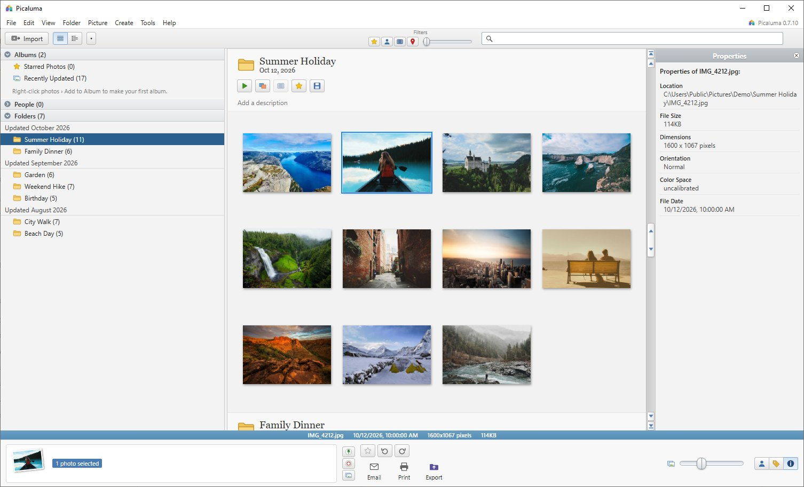

Your photos, the Picasa way.
A free, open-source photo organizer and editor for Windows, Mac and Linux. Every folder on one page, instant search, one-click fixes — and your originals are never touched.
- ⚡ Fast searches 712,000 photos in milliseconds
- 🪶 Tiny 4 MB download
- 💻 Everywhere Windows · Mac · Linux
- 🔒 Private offline, no account

Everything you loved about Picasa
Picasa was retired in 2016. Picaluma brings back its speed and simplicity — rebuilt from scratch, natively, for today's computers and Macs.
Instant search
Type and results appear as you go — file names, folders, captions, tags and cameras, across your whole library.
Every folder, one page
All your folders on one smooth, scrolling page, newest first — click a folder and glide straight to it.
One-click fixes
I'm Feeling Lucky, Auto Contrast, Crop, Straighten, Fill Light and 30+ effects with live previews.
Originals never touched
Every edit is non-destructive and can be undone. Export a copy with your edits whenever you like.
Albums, stars & tags
Gather pictures from any folders into albums, star your favourites and tag them for later.
Private & offline
Everything stays on your computer. No account, no upload, no subscription — just your photos.
Email, print & export
Send resized copies through your mail app, print wallet to full-page layouts and contact sheets, or export with a watermark.
Collages & posters
Mosaic and grid collages, posters across several pages, web-page galleries, and one click to set your desktop.
Cloud drives, no downloads
OneDrive, Google Drive, Dropbox and Synology Drive folders are listed in seconds. Online-only photos stay online until you look at them.
Fast on real libraries
Tested on 712,000 photos across local, external, network and cloud drives.
Install in a minute
The Mac version is signed and notarized by Apple. On Windows, SmartScreen may ask you to confirm once.
Windows
- Run Picaluma_…_x64-setup.exe. It installs just for you — no admin rights needed.
- If you see “Windows protected your PC”, click More info → Run anyway.
- Open Picaluma and choose the folders to watch. Coming from Picasa? Import your old folder list in one click.
Mac
- Open Picaluma_…_universal.dmg and drag Picaluma into Applications, then open it. It's notarized by Apple, so it opens like any other Mac app.
- Prefer Terminal? This line downloads, installs and opens the latest version:
curl -fsSL https://ahmok.com/picaluma/install.sh | bash - Choose Watch my Pictures folder or any folders you like. HEIC photos from your iPhone work too.